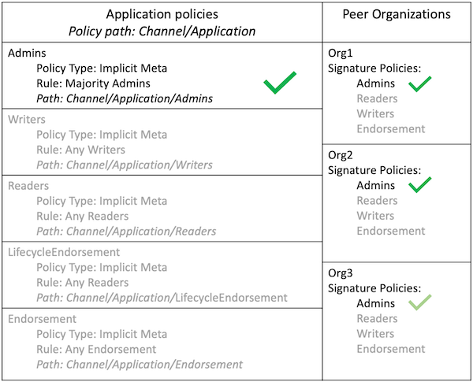

configtxgen创建通道配置¶
configtxgen的用途？¶
configtxgen = configuration + transaction +generate （配置交易生成器）
configtxgen 命令允许用户创建和查看通道配置相关构件。
所生成的构件取决于 configtx.yaml 的内容。
在network.sh的使用场景是什么？¶
network.sh中使用configtxgen生成系统通道创世块，配置交易文件，锚节点Org1,Org1更新交易文件
# 生成系统通道创世块 genesis.block
configtxgen -profile TwoOrgsOrdererGenesis -channelID system-channel -outputBlock ./system-genesis-block/genesis.block
# 生成通道配置交易文件 mychannel.tx
# mychannel.tx 文件用于后续 peer channel create 创建通道
configtxgen -profile TwoOrgsChannel -outputCreateChannelTx ./channel-artifacts/mychannel.tx -channelID mychannel
# 生成锚节点Org1,Org1配置更新文件 Org1MSPanchors.tx ，Org2MSPanchors.tx。
# Org1MSPanchors.tx ，Org2MSPanchors.tx两个文件会用于后续 peer channel update 更新通道。
configtxgen -profile TwoOrgsChannel -outputAnchorPeersUpdate ./channel-artifacts/Org1MSPanchors.tx -channelID mychannel -asOrg Org1MSP
configtxgen -profile TwoOrgsChannel -outputAnchorPeersUpdate ./channel-artifacts/Org2MSPanchors.tx -channelID mychannel -asOrg Org2MSP
configtxgen 命令的效果是什么？¶
以下命令使用配置文件./configtx/configtx.yaml的轮廓TwoOrgsOrdererGenesis在目录./system-genesis-block下生产创世块genesis.block
configtxgen -profile TwoOrgsOrdererGenesis -channelID system-channel -outputBlock ./system-genesis-block/genesis.block
术语解释¶
什么是Policy（策略）？¶
官网原文：Policies test whether the signer or signers of some data meet some condition required for those signatures to be considered ‘valid’. This is useful for determining that the correct parties have agreed to a transaction, or change.
策略测试签名者的数据是否符合所需签名的条件。用于判断指定的成员已经同意了交易或者修改。
什么是ImplicitMeta(隐式策略)？¶
隐式策略的语法: <ALL|ANY|MAJORITY> <sub_policy>
ALL|ANY|MAJORITY代表全部子策略同意|任意一个子策略同意|大多数子策略同意。

上图所示，子策略同意的方式是签名，提交给该通道的通道更新请求包含来自Org1，Org2和Org3的签名，满足每个组织的签名策略。因此，该请求满足Channel/Application/Admins策略。实际上只需要org1和org2就已经完成了大多数子策略同意。
什么是Capabilities(能力)？¶
官网原文：These capabilities, which are defined in the configuration of each channel, ensure determinism by defining a level at which behaviors produce consistent results. As you’ll see, these capabilities have versions which are closely related to node binary versions. Capabilities enable nodes running at different version levels to behave in a compatible and consistent way given the channel configuration at a specific block height.
能力定义在管道的配置中，用于确保该同个管道的行为是一致确定的。正如你看到的，这些能力的版本和二进制文件的版本是相似的。能力使得不同版本节点可以在一个指定的高度和配置兼容运行并保证结果一致性。
什么是Consortiums(联盟)？¶
联盟内所有组织拥有相同的应用通道创建策略，且创建新的应用通道必须包含合法的联盟名称。
configtxgen -outputBlock 配置项的含义是什么？¶
TwoOrgsOrdererGenesis 配置信息如下：
TwoOrgsOrdererGenesis:
<<: *ChannelDefaults # 通道
Orderer:
<<: *OrdererDefaults # 排序节点
Organizations:
- *OrdererOrg # 排序节点足迹
Capabilities:
<<: *OrdererCapabilities # 排序节点能力
Consortiums:
SampleConsortium:
Organizations:
- *Org1 # 组织1
- *Org2 # 组织2
ChannelDefaults的详情如下：
Channel: &ChannelDefaults
Policies:
# 决定谁能调用'Deliver' API
Readers:
Type: ImplicitMeta
Rule: "ANY Readers"
# 决定谁能调用'Broadcast' API
Writers:
Type: ImplicitMeta
Rule: "ANY Writers"
# 默认值，决定谁能修改配置中的元素
Admins:
Type: ImplicitMeta
Rule: "MAJORITY Admins"
# 能力：不同版本的fabric有不同的世界树状态。如果缺少对应能力，则会删除对应交易直到升级到对应版本。
Capabilities:
<<: *ChannelCapabilities
OrdererDefaults的详情如下：
Orderer: &OrdererDefaults
# 选择Raft作为共识类型
OrdererType: etcdraft
# Raft 排序服务由可以参与共识过程的共识者列表定义。因为测试网络仅使用一个Orderer节点，所以共识者列表仅包含一个端点：
EtcdRaft:
Consenters:
- Host: orderer.example.com
Port: 7050
ClientTLSCert: ../organizations/ordererOrganizations/example.com/orderers/orderer.example.com/tls/server.crt
ServerTLSCert: ../organizations/ordererOrganizations/example.com/orderers/orderer.example.com/tls/server.crt
# 创建新块的频率
BatchTimeout: 2s
# 块的大小
BatchSize:
# 最大交易数，达到后会产生区块
MaxMessageCount: 10
# 最大区块大小，达到后会产生区块
AbsoluteMaxBytes: 99 MB
# 默认区块大小
PreferredMaxBytes: 512 KB
# 组织，目前为空
Organizations:
# orders的策略
Policies:
Readers:
Type: ImplicitMeta
Rule: "ANY Readers"
Writers:
Type: ImplicitMeta
Rule: "ANY Writers"
Admins:
Type: ImplicitMeta
Rule: "MAJORITY Admins"
# BlockValidation来确认添加到通道的新块是由作为通道共识者集合一部分的Orderer节点生成的，并且该块未被篡改或被另一个Peer组织创建
BlockValidation:
Type: ImplicitMeta
Rule: "ANY Writers"
OrdererOrg的详情如下：
# 每个组织都由MSP ID和通道MSP标识。通道MSP存储在通道配置中，并包含用于标识组织的节点，应用程序和管理员的证书。
- &OrdererOrg
# 名称
Name: OrdererOrg
# ID
ID: OrdererMSP
# MSP的文件夹
MSPDir: ../organizations/ordererOrganizations/example.com/msp
# 策略用途：
Policies:
Readers:
Type: Signature
Rule: "OR('OrdererMSP.member')"
Writers:
Type: Signature
Rule: "OR('OrdererMSP.member')"
Admins:
Type: Signature
Rule: "OR('OrdererMSP.admin')"
OrdererEndpoints:
- orderer.example.com:7050
OrdererCapabilities的详情如下：
Orderer: &OrdererCapabilities
# V2_0 的能力
V2_0: true